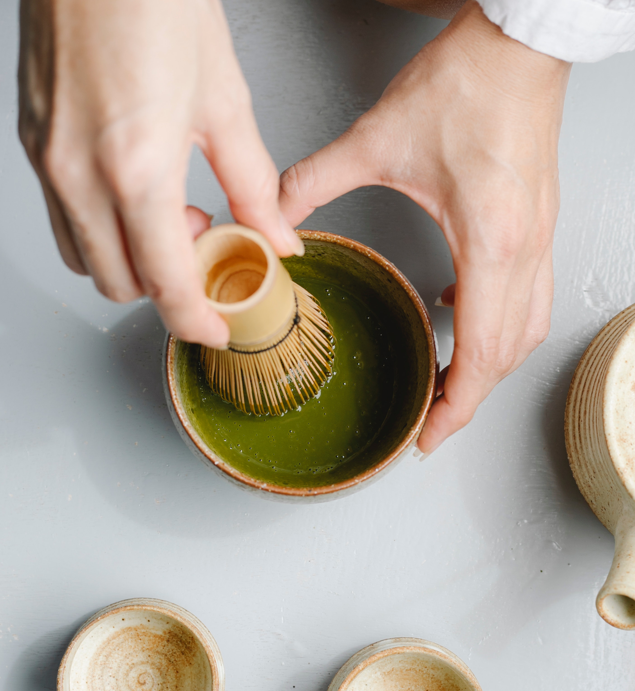

A Matchaholic's guide to matcha
The history of green tea in China goes back to 8th century and the method of making powdered tea from steam-prepared dried tea leaves, became popular in 12th century. That is when matcha was discovered by a Buddhist monk, Myoan Eisai, and brought to Japan. Esai realized that drinking matcha improved his Zen meditation sessions by producing a state of calm alertness. (Today we know this is thanks to the interaction of matcha’s caffeine and L-theanine). As the benefits of matcha become more widely recognized it became the basis for the sophisticated art of Japanese Tea Ceremony or “chado.”
MAKING A MATCHA LATTE
INGREDIENTS
- ¼ teaspoon matcha
- 2 ounces hot water, 175°F is ideal
- 6 ounces additional hot water or steamed milk of choice, almond milk, oat milk, coconut milk, dairy milk, etc.
- Maple syrup, honey, or other sweetener, optional
EQUIPMENTS
- Bamboo Whisk (this is what I use for zero matcha chunks!)
- Small Bowl (stoneware ones like these are best)
- Fine Mesh Strainer (for sifting out clumps)
MAKE A MATCHA FOR YOURSELF
The Traditional Method
1. Sift the matcha into a mug or small bowl to get rid of any lumps. Matcha clumps very easily, so it is recommended sifting it before you add any water.
2. Pour in the 2 ounces of the hot water. Using a matcha whisk or small regular whisk, whisk briskly from side to side until the matcha is fully dispersed and there is a foamy layer on top.
3. Finally, top it off with more hot water or steamed milk. Traditional matcha tea is made with just matcha powder and water, but you can also easily make a latte by finishing your drink with steamed milk.
